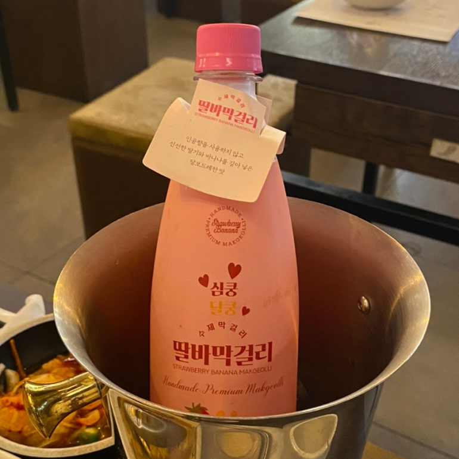
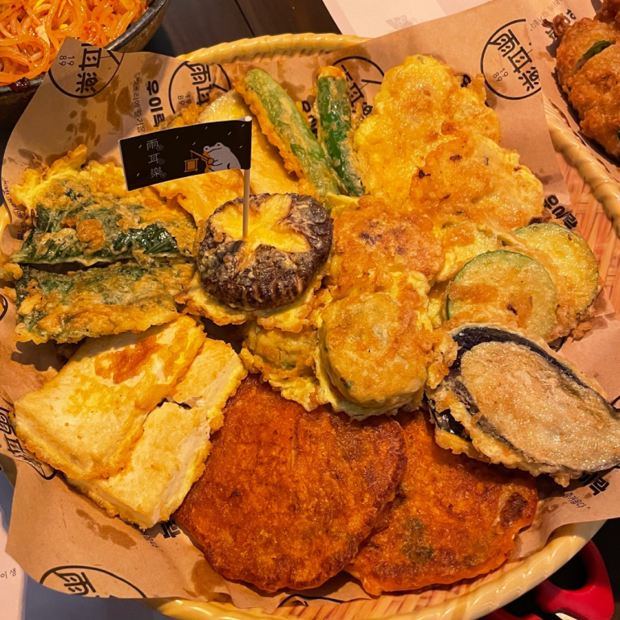
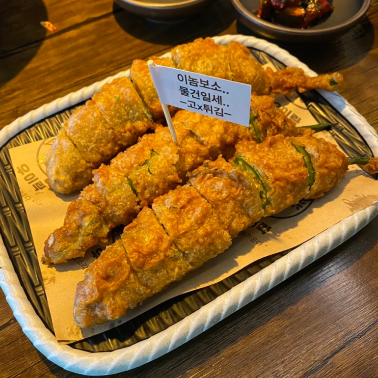
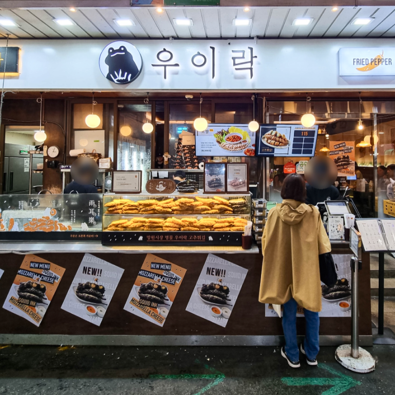
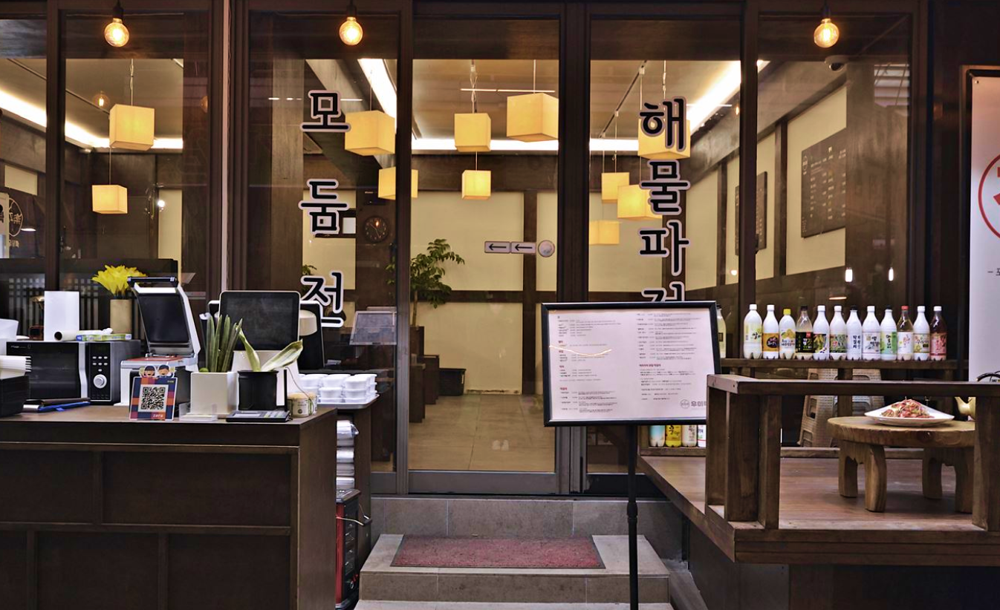

望遠市場の中に位置するウイラクは、唐辛子天ぷらと肉チヂミを代表メニューとして掲げている伝統居酒屋だ。唐辛子の天ぷらは粉食メニューだが、中身が餃子と似ているためか、全店でも販売している。出来立ての天ぷらとチヂミにマッコリを一口加えると、その日の疲れがすべて洗い流される。
望遠市場の中にはたくさんの美味しい店があるので、ウイラクのメニューを包んで他の店のメニューと一緒に楽しんでもいいだろう。韓国旅行のうち、1食くらいは韓国在来市場の伝統料理でテーブルを満たしてみてはどうだろうか。

住所 : ソウル麻浦区ポウンロ8道22
最最寄りの地下鉄駅 : 望遠(マンウォン)駅(徒歩6分)
ホームページ : https://simplemen.co.kr/wooyirak
近くの観光地
- マンリダンキル
- 住所 : ソウル麻浦区望遠洞403-7
- ホームページ : -
- 望遠漢江公園
- 住所 : ソウル麻浦区麻浦ナルキル467漢江公園望遠地区事務所
- ホームページ : https://hangang.seoul.go.kr/archives/46737